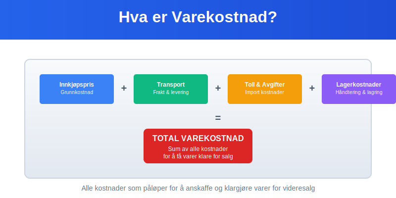
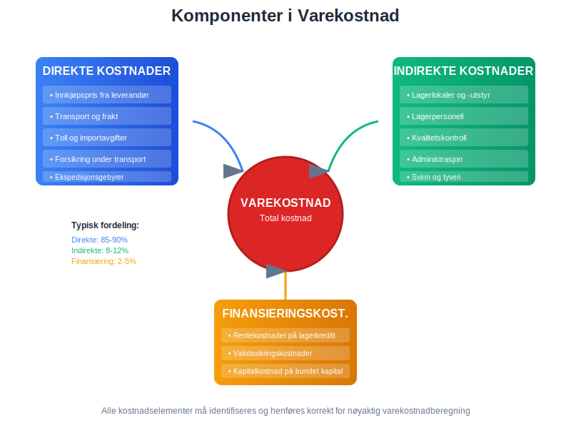
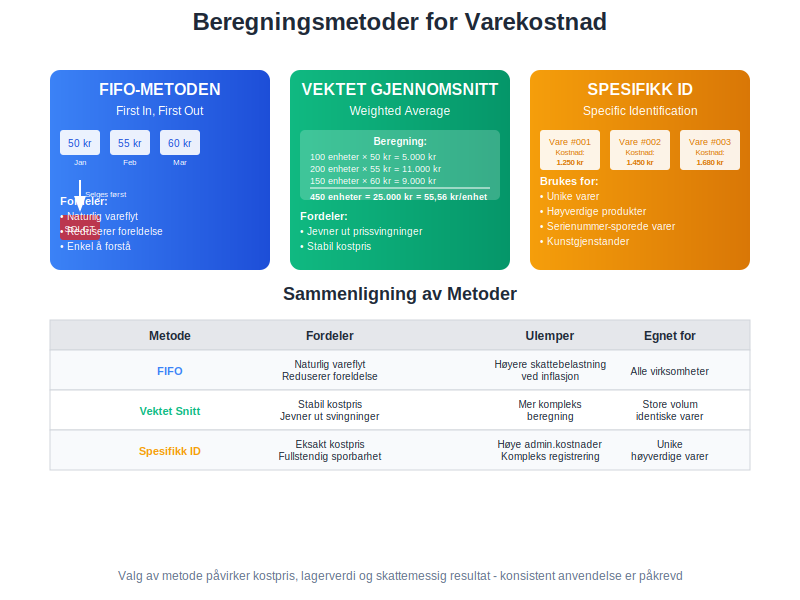
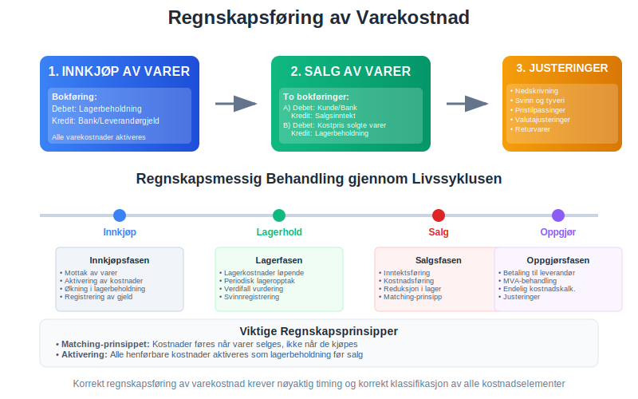
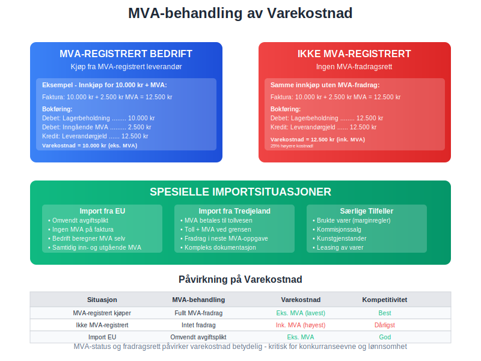
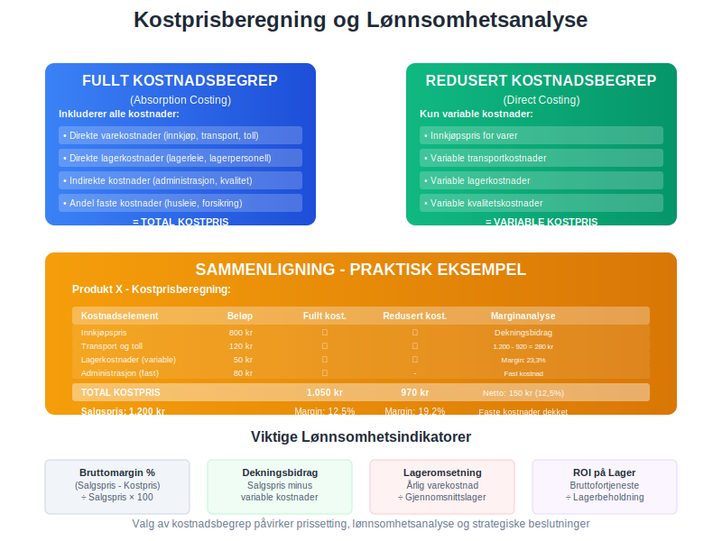
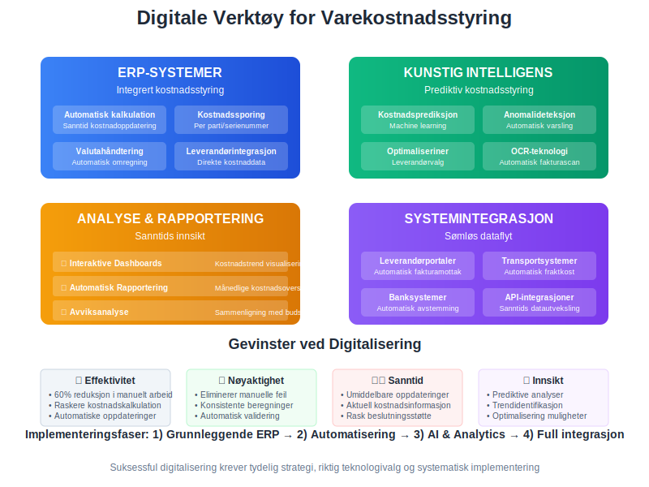
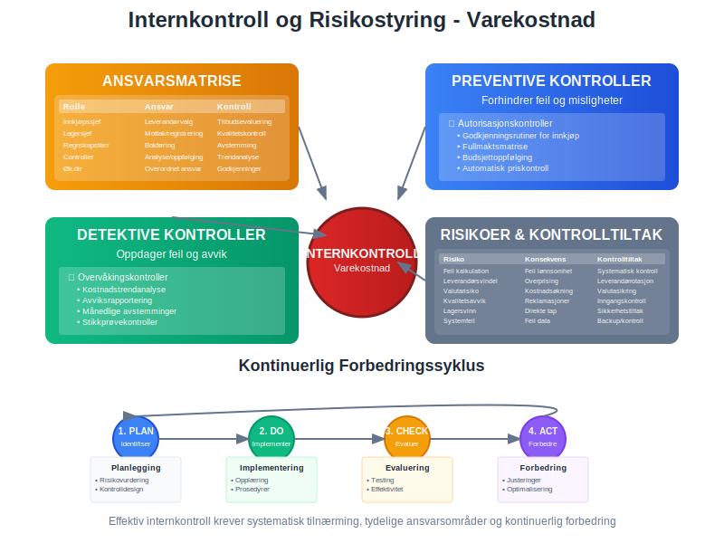
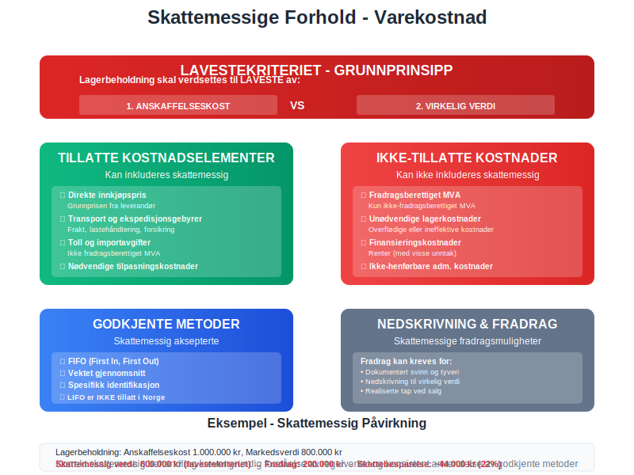
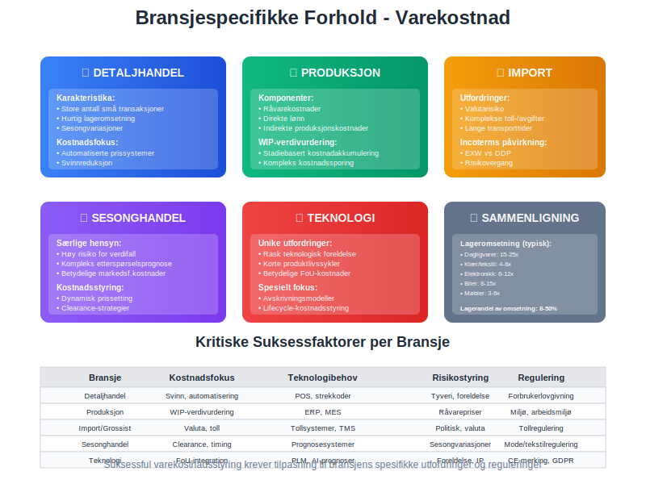

Varekostnad er den totale kostnaden en bedrift påløper for å anskaffe varer som skal selges videre til kunder. Dette begrepet er fundamentalt i regnskapsføring og omfatter ikke bare innkjøpsprisen, men alle direkte og indirekte kostnader som påløper for å få varene klare for salg. Varekostnad er en kritisk komponent i beregning av kostpris og påvirker direkte bedriftens lønnsomhet. For handelsvirksomheter utgjør varekostnad ofte den største kostnadsposten og krever derfor nøyaktig beregning og oppfølging for å sikre korrekt lagerbeholdning og optimal varelager-styring som grunnlag for nøyaktig resultatregnskap.
Seksjon 1: Grunnleggende om Varekostnad
Varekostnad skiller seg fra andre typer kostnader ved at den direkte knyttes til spesifikke varer som er ment for videresalg. Dette påvirker både regnskapsføring og skattemessig behandling, da varekostnader først aktiveres som lagerbeholdning i varelageret og deretter kostnadsføres når varene selges.

Definisjon og Avgrensning
Varekostnad inkluderer alle kostnader som påløper for å bringe varer til det stedet og den tilstanden hvor de er klare for salg. Dette omfatter:
- Direkte kostnader: Innkjøpspris, transport, toll, forsikring
- Indirekte kostnader: Lagerkostnader, kvalitetskontroll, administrasjon
- Tilleggskostnader: Modifisering, montering, ferdigstillelse
Forskjell mellom Varekostnad og Andre Kostnader
| Kostnadstype | Karakteristikk | Regnskapsmessig behandling | Timing |
|---|---|---|---|
| Varekostnad | Knyttet til spesifikke varer | Aktiveres som lager | Kostnadsføres ved salg |
| Driftskostnader | Generell virksomhet | Direkte kostnadsføring | Kostnadsføres umiddelbart |
| Lønnskostnad | Personalkostnader | Kostnadsføres løpende | Månedlig periodisering |
| Avskrivninger | Eiendeler over tid | Systematisk fordeling | Over eiendelens levetid |
Seksjon 2: Komponenter i Varekostnad
Korrekt beregning av varekostnad krever forståelse av alle kostnadselementer som skal inkluderes. Dette påvirker ikke bare kostprisen, men også lagerverdien og den endelige lønnsomhetsberegningen.

Direkte Kostnadselementer
Innkjøpspris og Grunnkostnader
Innkjøpsprisen er den mest åpenbare komponenten i varekostnad og inkluderer:
- Katalogpris: Leverandørens listepris
- Volumerabatter: Reduksjoner basert på kjøpsvolum
- Sesongjusteringer: Pristilpasninger for sesongvarer
- Betalingsrabatter: Reduksjoner for rask betaling
Transport- og Ekspedisjonskostnader
Transport av varer fra leverandør til eget lager er en integrert del av varekostnaden:
- Fraktkostnader: Direkte transportutgifter
- Forsikring under transport: Beskyttelse mot tap og skade
- Ekspedisjonsgebyrer: Håndtering og administrasjon
- Lastehåndtering: Lossing og lessing av varer
Toll- og Avgiftskostnader
For importerte varer inkluderes alle offentlige avgifter i varekostnaden:
- Toll: Basert på tollverdi og tollsats
- Importavgifter: Spesielle avgifter på visse varegrupper
- Administrativa gebyrer: Tollekspedisjon og dokumentbehandling
- MVA ved import: Merverdiavgift som ikke kan fradras umiddelbart
Indirekte Kostnadselementer
Lagerkostnader
Lagerkostnader som kan henføres til spesifikke varer inkluderes i varekostnaden:
- Lagerleie: Andel av lagerlokaler
- Lagervedlikehold: Renhold og vedlikehold av lagerfasiliteter
- Lagerpersonell: Direkte lønnskostnader for lagerhåndtering
- Lagerutstyr: Avskrivning på trucks, hyller og annet utstyr
Kvalitetskontroll og Inspeksjon
- Inngangscontroll: Testing og verifikasjon av mottatte varer
- Kvalitetstesting: Laboratorieutgifter og sertifisering
- Kasserte varer: Kostnader for varer som ikke oppfyller standard
- Reklamasjonskostnader: Håndtering av defekte leveranser
Finansieringskostnader
Rentekostnader knyttet til finansiering av varekjøp kan under visse omstendigheter inkluderes:
- Lagerkreditt: Renter på kreditt for å finansiere lagerbeholdning
- Sesongfinansiering: Spesielle lån for sesonginnkjøp
- Valutakurssikring: Kostnader for å sikre seg mot valutarisiko
- Leverandørkreditt: Implisitte rentekostnader i leverandørfinansiering
Seksjon 3: Beregningsmetoder for Varekostnad
Valg av beregningsmetode for varekostnad har betydelige konsekvenser for både regnskapsmessig og skattemessig resultat. Norsk regnskapslovgivning gir visse valgmuligheter, men krever konsistent anvendelse av valgt metode.

FIFO-metoden (First In, First Out)
FIFO-metoden antar at de eldste varene selges først, hvilket betyr at varekostnaden baseres på de eldste innkjøpsprisene.
Eksempel på FIFO-beregning:
| Dato | Transaksjon | Antall | Enhetspris | Total Kostnad |
|---|---|---|---|---|
| 01.01 | Åpningslager | 100 | 50 kr | 5.000 kr |
| 15.01 | Innkjøp | 200 | 55 kr | 11.000 kr |
| 30.01 | Innkjøp | 150 | 60 kr | 9.000 kr |
| 10.02 | Salg | 180 | FIFO | 9.500 kr |
Ved salg av 180 enheter brukes først de 100 enhetene fra åpningslageret (50 kr) og deretter 80 enheter fra første innkjøp (55 kr): Varekostnad = (100 × 50) + (80 × 55) = 5.000 + 4.400 = 9.400 kr
Fordeler med FIFO:
- Reflekterer naturlig vareflyt
- Enkel å forstå og implementere
- Reduserer risiko for foreldelse
- Høyere lagerverdi i inflasjonsperioder
Ulemper med FIFO:
- Kan gi høyere skattebelastning
- Kostpris reflekterer ikke aktuelle markedspriser
- Kompleks ved mange små innkjøp
Vektet Gjennomsnitt-metoden
Vektet gjennomsnitt beregner en gjennomsnittlig kostpris basert på alle varer i lageret.
Beregningseksempel:
| Periode | Beskrivelse | Antall | Enhetspris | Total Verdi |
|---|---|---|---|---|
| Start | Åpningslager | 100 | 50 kr | 5.000 kr |
| Januar | Innkjøp 1 | 200 | 55 kr | 11.000 kr |
| Januar | Innkjøp 2 | 150 | 60 kr | 9.000 kr |
| Total | Lager | 450 | 55,56 kr | 25.000 kr |
Vektet gjennomsnittspris = 25.000 kr ÷ 450 enheter = 55,56 kr per enhet
Ved salg av 180 enheter: Varekostnad = 180 × 55,56 = 10.000 kr
Fordeler med Vektet Gjennomsnitt:
- Jevner ut prissvingninger
- Enkel administrasjon
- Stabil kostpris over tid
- Mindre påvirkning av tilfeldige prisendringer
Spesifikk Identifikasjon
For unike eller høyverdige varer kan spesifikk identifikasjon anvendes:
- Unike serienumre: Hver vare spores individuelt
- Faktisk kostpris: Eksakt kostnad for hver solgte vare
- Komplett sporbarhet: Full oversikt over varebevegelser
- Høy administrative kostnader: Krever detaljert registrering
Seksjon 4: Regnskapsføring av Varekostnad
Korrekt regnskapsføring av varekostnad følger spesifikke prinsipper som sikrer at kostnader aktiveres som lagerbeholdning og kostnadsføres når varene selges. Dette krever nøye periodisering og korrekt timing av bokføringer.

Aktivering av Varekostnad
Ved mottak av varer aktiveres varekostnaden som lagerbeholdning:
Debet: Lagerbeholdning (omløpsmidler)
Kredit: Bank/Leverandørgjeld
Alle direkte og indirekte kostnader som kan knyttes til spesifikke varer inkluderes i denne aktiveringen.
Kostnadsføring ved Salg
Ved salg av varer må to bokføringer gjøres:
- Registrering av salgsinntekt:
Debet: Kundefordringer/Bank
Kredit: Salgsinntekter
- Registrering av varekostnad:
Debet: Kostpris solgte varer (kostnad)
Kredit: Lagerbeholdning (omløpsmidler)
Periodisering og Timing
Leveringsbetingelser og Risikovergang
Timing av varekostnad avhenger av når risikoen overgår til kjøper:
| Leveringsbetingelse | Risikovergang | Kostnadstiming |
|---|---|---|
| FOB shipping point | Ved leverandørens lager | Ved framsending |
| FOB destination | Ved mottak | Ved mottak |
| CIF (Cost, Insurance, Freight) | Ved lasting | Ved framsending |
| DDP (Delivered Duty Paid) | Ved levering | Ved mottak |
Fakturaavviker og Etterreguleringer
- Prisdifferanser: Justeringer for feil i opprinnelige fakturaer
- Volumrabatter: Etterberegning basert på årsvolum
- Valutajusteringer: Endringer i valutakurser
- Kvalitetsavvik: Fratrekk for kvalitetsmangler
Behandling av Særlige Kostnader
Returvarer og Defekte Leveranser
Når varer returneres til leverandør:
Debet: Bank/Leverandørgjeld
Kredit: Lagerbeholdning
Nedskrivning av Varekostnad
Ved verdifall på lagerbeholdning:
Debet: Nedskrivning lagerbeholdning (kostnad)
Kredit: Lagerbeholdning
Svinn og Tyveri
Ved dokumentert svinn:
Debet: Svinn og tap (kostnad)
Kredit: Lagerbeholdning
Seksjon 5: MVA-behandling av Varekostnad
Merverdiavgift på varekjøp behandles forskjellig avhengig av leverandørens MVA-status og om bedriften selv er MVA-registrert. Dette påvirker den endelige varekostnaden og krever nøyaktig dokumentasjon for å sikre korrekt fradragsrett.

MVA-registrerte Bedrifter
Innkjøp fra MVA-registrerte Leverandører
For MVA-registrerte bedrifter som kjøper fra MVA-registrerte leverandører:
Bokføring av innkjøp med MVA:
Debet: Lagerbeholdning (eks. MVA)
Debet: Inngående MVA
Kredit: Leverandørgjeld (ink. MVA)
Eksempel: Innkjøp av varer for 10.000 kr + 2.500 kr MVA = 12.500 kr
| Konto | Debet | Kredit |
|---|---|---|
| Lagerbeholdning | 10.000 kr | |
| Inngående MVA | 2.500 kr | |
| Leverandørgjeld | 12.500 kr |
Dokumentasjonskrav for MVA-fradrag
- Gyldig MVA-faktura: Må inneholde leverandørens MVA-nummer
- MVA-spesifikasjon: Tydelig angivelse av MVA-beløp og MVA-sats
- Betalingsbevis: Dokumentasjon på at fakturaen er betalt
- Varemottak: Bevis på at varene faktisk er mottatt
Ikke-MVA-registrerte Bedrifter
Innkjøp uten MVA-fradragsrett
Bedrifter som ikke er MVA-registrert kan ikke fradra inngående MVA:
Bokføring uten MVA-fradrag:
Debet: Lagerbeholdning (ink. MVA)
Kredit: Leverandørgjeld (ink. MVA)
Dette betyr at hele fakturabeløpet inkludert MVA inngår i varekostnaden.
Spesielle MVA-situasjoner
Import fra EU-land
Omvendt avgiftsplikt gjelder for import fra EU:
Debet: Lagerbeholdning (varekostad eks. MVA)
Debet: Inngående MVA
Kredit: Utgående MVA
Kredit: Leverandørgjeld (eks. MVA)
Import fra Tredjeland
MVA ved tollbehandling:
- MVA betales til tollmyndighetene
- Kan fradras som inngående MVA (hvis bedriften er MVA-registrert)
- Inngår i varekostnaden hvis ikke fradragsberettiget
Brukte Varer og Kunstgjenstander
Særlige marginregler kan gjelde:
- Kun MVA på fortjenestemargin
- Spesielle dokumentasjonskrav
- Begrenset fradragsrett
Seksjon 6: Kostprisberegning og Lønnsomhetsanalyse
Nøyaktig kostprisberegning basert på korrekt varekostnad er fundamentalt for lønnsomhetsanalyse og prissetting. Dette krever systematisk oppfølging av alle kostnadselementer og regelmessig analyse av lønnsomhet på produkt- og kundenivå.

Fullt Kostnadsbegrep vs. Redusert Kostnadsbegrep
Fullt Kostnadsbegrep (Absorption Costing)
Inkluderer alle kostnader direkte og indirekte knyttet til varen:
Komponenter i fullt kostnadsbegrep:
- Direkte varekostnader (innkjøp, transport, toll)
- Direkte lagerkostnader (lagerleie, lagerpersonell)
- Indirekte kostnader (administrasjon, kvalitetskontroll)
- Andel av faste kostnader (husleie, forsikring)
Redusert Kostnadsbegrep (Direct Costing)
Inkluderer kun variable kostnader direkte knyttet til varen:
Komponenter i redusert kostnadsbegrep:
- Innkjøpspris
- Variable transportkostnader
- Variable lagerkostnader
- Variable kvalitetskostnader
Kostnadsfordeling og Kostnadsdrivere
ABC-basert Kostnadsfordeling
Activity-Based Costing gir mer nøyaktig kostnadsfordeling:
| Aktivitet | Kostnadrdriver | Eksempel |
|---|---|---|
| Innkjøp | Antall bestillinger | 500 kr per bestilling |
| Lagerhold | Kubikkmeter lagerplass | 100 kr per m³ måned |
| Kvalitetskontroll | Antall tester | 50 kr per test |
| Transport | Vekt og avstand | 2 kr per kg/km |
Tradisjonell Kostnadsfordeling
Enklere fordelingsmetoder basert på:
- Prosentandel av innkjøpsverdi
- Fast kronebeløp per enhet
- Vekt- eller volumbasert fordeling
Lønnsomhetsanalyse per Produktgruppe
Bruttomargin-analyse
Bruttomargin = Salgspris - Varekostnad
| Produktgruppe | Salgspris | Varekostnad | Bruttomargin | Margin % |
|---|---|---|---|---|
| Produktgruppe A | 1.000 kr | 600 kr | 400 kr | 40% |
| Produktgruppe B | 500 kr | 350 kr | 150 kr | 30% |
| Produktgruppe C | 200 kr | 160 kr | 40 kr | 20% |
Dekningsbidragsanalyse
Dekningsbidrag = Salgspris - Variable kostnader
For beslutninger om produktmiks og prissetting er dekningsbidrag ofte mer relevant enn bruttomargin.
KPI-er for Varekostnadsstyring
Kostnadsnøkkeltall
| KPI | Beregning | Målsetting |
|---|---|---|
| Kostprisandel | Varekostnad ÷ Salgspris | 60-70% |
| Transportkostnad % | Transport ÷ Total varekostnad | < 5% |
| Svinnprosent | Svinn ÷ Innkjøpsverdi | < 2% |
| Lageromsetning | Årlig varekostnad ÷ Gj.snitt lager | > 6 ganger |
Trendanalyse
Månedlig oppfølging av:
- Utvikling i varekostnad per enhet
- Endringer i kostnadsmiks
- Avvik fra budsjetterte kostnader
- Sesongmessige variasjoner
Seksjon 7: Digitale Verktøy og Automatisering
Moderne varekostnadsstyring drar nytte av digitale verktøy for å automatisere beregninger, forbedre nøyaktigheten og gi sanntidsinnsikt i kostnadsutvikling. Integration med ERP-systemer og automatiserte kostnadssystemer reduserer manuelt arbeid og risiko for feil.

ERP-integrasjon og Automatisering
Automatisk Kostnadskalkulation
Moderne ERP-systemer kan automatisk beregne varekostnad basert på:
- Forhåndsdefinerte kostnadsregler
- Automatisk fordeling av indirekte kostnader
- Sanntids oppdatering av lagerverdier
- Integration med transportleverandører for fraktkostnader
Kostnadssporingsmoduler
Avanserte sporingskapabiliteter:
- Sporbarhet av kostnader per parti eller serienummer
- Automatisk registrering av tilleggskostnader
- Valutaomregning i sanntid
- Kostnadsjustering basert på faktiske utfall
Kunstig Intelligens og Machine Learning
Prediktiv Kostnadsstyring
AI-drevne systemer kan:
- Forutsi fremtidige kostnadstrender
- Optimalisere leverandørvalg basert på total kostnad
- Identifisere kostnadsdrivere automatisk
- Varsle om unormale kostnadsavvik
Automatisk Kostnadskategorisering
- OCR-teknologi: Automatisk lesing av fakturaer
- Maskinlæring: Intelligent kategorisering av kostnader
- Anomali-deteksjon: Automatisk oppdagelse av feil
- Prediksjon: Forutsigelse av kostnadsentaling
Kostnadsanalyse og Rapportering
Sanntids Dashboards
Interaktive dashboards som viser:
- Kostnadstrend per produkt og periode
- Avvik fra budsjetterte kostnader
- Lønnsomhetsanalyse per kunde og produkt
- Nøkkeltall og KPI-er
Automatisk Rapportering
Systematisk rapportering av:
- Månedlige kostnadsoversikter
- Avviksanalyse mot budsjett
- Lønnsomhetsrapporter per segment
- Kostnadsprognose for kommende perioder
Integration med Eksterne Systemer
Leverandørportaler
Direkte integration med leverandørsystemer:
- Automatisk mottak av fakturaer
- Sanntids prisinformasjon
- Automatisk bestillingsbekreftelse
- Sporbarhet av leveranser
Transport- og Logistikksystemer
- Automatisk fraktkostnadberegning
- Integration med speditører
- Sporbarhet av forsendelser
- Automatisk kostnadsbokføring
Seksjon 8: Internkontroll og Risikostyring
Effektiv internkontroll av varekostnad reduserer risiko for feil, misligheter og tap. Dette krever systematiske kontrollrutiner, tydelig ansvarsfordeling og regelmessig overvåking av kostnadsprosesser.

Kontrollmiljø og Ansvarsfordeling
Ansvarsmatrise for Varekostnad
| Rolle | Ansvar | Kontrollaktiviteter |
|---|---|---|
| Innkjøpsansvarlig | Leverandørvalg og priser | Sammenligning av tilbud |
| Lagersjef | Mottak og registrering | Kvalitetskontroll ved mottak |
| Regnskapsansvarlig | Bokføring og rapportering | Avstemming av lagerverdier |
| Controller | Analyse og oppfølging | Kostnadstrendanalyse |
Godkjenningsrutiner og Fullmakter
Strukturerte godkjenningsnivåer:
- Innkjøpsfullmakter basert på beløpsgrenser
- Tofaktorgodkjenning for store innkjøp
- Automatisk eskalering ved avvik
- Periodisk gjennomgang av fullmakter
Risikofaktorer og Kontrolltiltak
Hovedrisikoer ved Varekostnadsstyring
| Risikofaktor | Potensielle konsekvenser | Kontrolltiltak |
|---|---|---|
| Feil kostnadskalkulation | Feil lønnsomhetsvurdering | Systematisk kostnadskontroll |
| Leverandørsvindel | Overprising og korrupsjon | Rotasjon av leverandører |
| Valutarisiko | Uforutsette kostnadsøkninger | Valutasikring og avtaleregler |
| Kvalitetsrisiko | Økte kostnader og reklamasjoner | Systematisk kvalitetskontroll |
| Lagersvinn | Direkte tap og feil kostnadsbasis | Sikkerhetstiltak og lageropptak |
Preventive Kontroller
Kontrolltiltak som forhindrer feil:
- Systematisk leverandørevaluering
- Automatisk sammenligning av priser
- Integrerte systemer som forhindrer duplisering
- Foreskrevne dokumentasjonskrav
Detektive Kontroller
Kontroller som oppdager feil:
- Regelmessige kostnadstrendanalyser
- Månedlig avstemming av lagerverdier
- Avviksanalyse mot budsjett og tidligere perioder
- Stikkprøvekontroller av fakturaer og leveranser
Revisjonsrutiner og Oppfølging
Intern Revisjon
Systematisk gjennomgang av:
- Kostnadsbereningsmodeller og -metoder
- Overholdelse av internkontrollprosedyrer
- Kvalitet på kostnadsdokumentasjon
- Effektivitet av kontrollaktiviteter
Ekstern Revisjon
Revisorens fokusområder:
- Korrekt verdivurdering av lagerbeholdning
- Overholdelse av regnskapsstandarder
- Tilstrekkelighet av internkontroll
- Kvalitet på kostnadssystemer og -prosesser
Kontinuerlig Forbedring
Systematisk forbedring gjennom:
- Årlig gjennomgang av kontrolleffektivitet
- Implementering av beste praksis
- Oppdatering av systemer og prosedyrer
- Opplæring og kompetanseutvikling
Seksjon 9: Skattemessige Forhold
Varekostnad har direkte skattemessige konsekvenser da den påvirker beregning av skattepliktig inntekt. Norske skattemyndigheter har spesifikke regler for hvordan varekostnad skal beregnes og dokumenteres.

Skattemessig Verdivurdering
Lavestekriteriet
I Norge må lagerbeholdning verdsettes til laveste verdi av:
- Anskaffelseskost (inkludert alle direkte og henførbare indirekte kostnader)
- Virkelig verdi (salgsverdi fratrukket salgskostnader)
Tillatte Kostnadselementer
Skattemessig kan følgende kostnader inkluderes:
- Direkte innkjøpspris
- Transport- og ekspedisjonskostnader
- Toll og importavgifter (ikke fradragsberettiget MVA)
- Direkte lagerkostnader
- Nødvendige tilpasnings- og ferdigstillelseskostnader
Ikke-tillatte Kostnadselementer
Følgende kostnader kan ikke inkluderes skattemessig:
- Fradragsberettiget merverdiavgift
- Unødvendige lagerkostnader
- Finansieringskostnader (med visse unntak)
- Administrative kostnader som ikke er direkte henførbare
Kostnadsmethoderegler
Valg av Vurderingsmetode
Skattemyndighetene aksepterer:
- FIFO-metoden (First In, First Out)
- Vektet gjennomsnitt
- Spesifikk identifikasjon (for unike varer)
LIFO-metoden er ikke tillatt i Norge.
Konsistensprinsippet
- Valgt metode må anvendes konsistent over tid
- Endring av metode krever godkjenning fra skattemyndighetene
- Metodeskifte kan utløse skattemessige konsekvenser
Nedskrivning og Verdifall
Når Nedskrivning er Påkrevd
Obligatorisk nedskrivning ved:
- Dokumentert kvalitetsforringelse
- Teknologisk foreldelse
- Markedsverdifall under anskaffelseskost
- Fysisk skade eller ødeleggelse
Skattemessig Fradragsrett
Fradrag kan kreves for:
- Dokumentert svinn og tyveri
- Nedskrivning til virkelig verdi
- Realiserte tap ved salg
- Kostnader ved avhending av verdiløse varer
Dokumentasjonskrav
Tilstrekkelig dokumentasjon inkluderer:
- Grundige beskrivelser av årsaker til verdifall
- Markedsanalyser eller takstrapporter
- Fotografisk dokumentasjon av skade
- Uavhengige bekraflelser fra tredjeparter
Tidspunkt for Kostnadsføring
Leveringsprinsipper
Skattemessig timing avhenger av:
- Kontraktuelle leveringsbetingelser
- Tidspunkt for risikovergang
- Faktisk mottak av varer
- Faktureringstidspunkt
Periodesplitt og Justeringer
Ved årsskifte må følgende vurderes:
- Varer i transit (underveis leveranser)
- Mottatte men ikke fakturerte varer
- Fakturerte men ikke mottatte varer
- Periodiseringsbehov for korrekt resultatmåling
Seksjon 10: Bransjespecifikke Forhold
Ulike bransjer har spesielle utfordringer og krav knyttet til varekostnadsstyring. Forståelse av bransjespecifikke forhold er kritisk for korrekt kostnadsstyring og overholdelse av relevante reguleringer.

Detaljhandel og Varehandel
Høy Volumaktivitet
Detaljhandel karakteriseres av:
- Store antall små transaksjoner
- Hurtig lageromsetning
- Sesongvariasjoner i etterspørsel
- Kompleks sortimentsstyring
Kostnadsstyring i Detaljhandel
Spesielle fokusområder:
- Automatiserte prissettingssystemer
- Strekkode-basert lagerstyring
- Svinnreduksjon og tyverisikring
- Effektive returhåndteringsprosesser
Produksjonsbedrifter
Råvarer og Produksjonskostnader
Varekostnad i produksjon inkluderer:
- Råvarekostnader
- Direkte lønnskostnader
- Indirekte produksjonskostnader
- Kvalitetskontroll og testing
Work-in-Progress (WIP) Verdivurdering
Varer under arbeid krever spesiell behandling:
- Stadiebasert kostnadakkumulering
- Korrekt fordeling av indirekte kostnader
- Regelmessig verdsettelse av uferdige produkter
- Kompleks kostnadssporing gjennom produksjonslinjer
Import og Grossistvirksomhet
Internasjonale Leverandørkjeder
Spesielle utfordringer:
- Valutarisiko og valutakonvertering
- Komplekse toll- og avgiftsberegninger
- Lange transporttider og transport forsikring
- Kreditdokumenter og finansiering
Internasjonale Handelsbetingelser
Incoterms påvirker kostnadskalkulation:
| Incoterm | Leverandørens ansvar | Kostnadselementer for kjøper |
|---|---|---|
| EXW | Minimal | Transport, forsikring, toll, alle risiko |
| FOB | Til skip | Sjøtransport, forsikring, toll |
| CIF | Til destinasjonshavn | Toll, landtransport |
| DDP | Komplett levering | Kun varemottak og lagerhold |
Sesongbaserte Virksomheter
Sesonghandel og Modebransjen
Spesielle kostnadshensyn:
- Høy risiko for verdifall ved sesonslutt
- Kompleks prognostisering av etterspørsel
- Betydelige markedsføringskostnader
- Utfordrende lagerstyring med korte produktlivssykler
Kostnadsstyring for Sesongvarer
Kritiske suksessfaktorer:
- Dynamisk prissetting basert på sesongutvikling
- Effektive clearance-strategier
- Nøyaktige salgsrognoser
- Fleksible leverandøravtaler
Teknologi og Elektronikk
Rask Teknologisk Utvikling
Unike utfordringer:
- Høy risiko for teknologisk foreldelse
- Korte produktlivssykler
- Betydelige forsknings- og utviklingskostnader
- Komplekse garanti- og servicekostnader
Kostnadsstyring for Teknologiprodukter
Spesielle fokusområder:
- Avskrivningsmodeller for verdifall
- Integration av FoU-kostnader i produktkostnad
- Garantikostnadsestimering
- Lifecycle-kostnadsstyring
Konklusjon
Varekostnad er en kritisk komponent i regnskapsføring og kostnadsstyring som krever systematisk tilnærming og nøyaktig beregning. Fra grunnleggende innkjøpspris til komplekse indirekte kostnader, må alle relevante kostnadselementer identifiseres, klassifiseres og behandles korrekt for å sikre nøyaktig lønnsomhetsanalyse og overholdelse av regnskapsmessige og skattemessige krav.
Moderne varekostnadsstyring drar nytte av digitale verktøy og automatiserte systemer som reduserer manuelt arbeid, forbedrer nøyaktighet og gir sanntidsinnsikt i kostnadutvikling. Integration med ERP-systemer og avanserte analyseværktøy gjør det mulig å optimalisere kostnadsstyringen på måter som ikke var mulige tidligere.
Effektiv internkontroll og risikostyring er essensielt for å beskytte mot feil, misligheter og tap. Dette krever tydelig ansvarsfordeling, systematiske kontrollrutiner og regelmessig overvåking av kostnadsprosesser.
For bedrifter som ønsker å forbedre sin varekostnadsstyring, anbefales det å:
- Etablere klare prosedyrer for identifikasjon og klassifikasjon av alle kostnadselementer
- Implementere konsistente metoder for kostnadskalkulation og verdivurdering
- Investere i teknologi som automatiserer kostnadsprosesser og reduserer feilrisiko
- Utvikle robuste kontrollsystemer som sikrer nøyaktighet og overholdelse av regelverk
- Utføre regelmessig analyse av kostnadstrender og lønnsomhet
Korrekt varekostnadsstyring er ikke bare et regnskapsmessig krav, men et strategisk konkurransefortrinn som kan forbedre lønnsomhet, optimalisere arbeidskapital og støtte informerte forretningsbeslutninger. Med riktig tilnærming og verktøy kan varekostnadsstyring transformeres fra en administrativ oppgave til en verdiskapende aktivitet som bidrar direkte til bedriftens suksess.